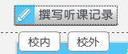
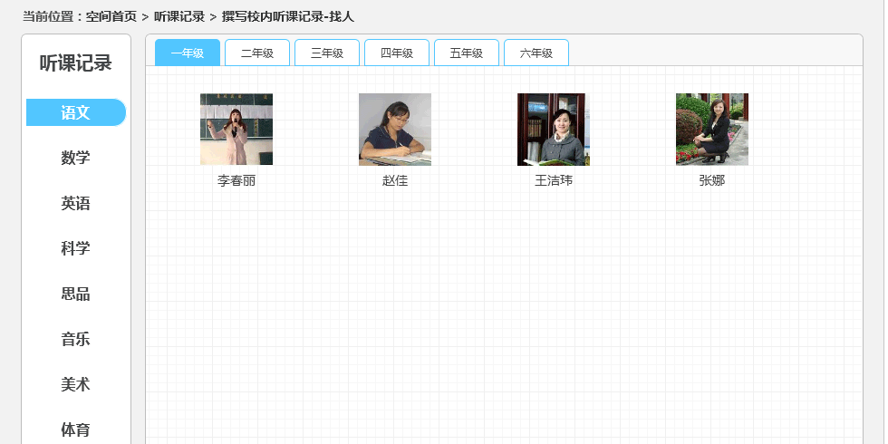
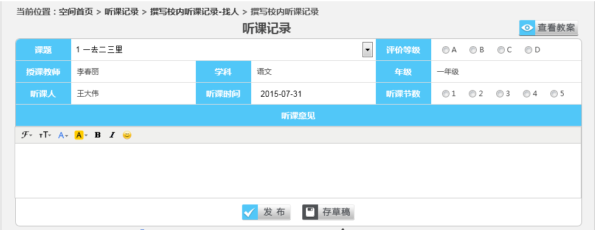
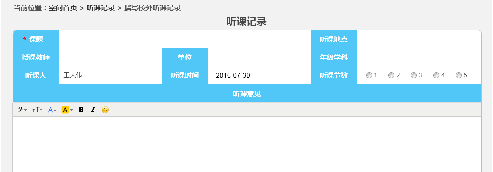

3.2.8 听课记录
1、听课记录编辑：
（1）撰写听课记录
点击“撰写听课记录”，选择对应“校内”、“校外”（如图3.2.8-1）。
根据学科及年纪，选择校内被听课老师。（如图3.2.8-2）
在弹出的听课记录表页面中，撰写听课记录（如图3.2.8-3）,选择课题后可点击“查看教案”，以打开不能编辑的word形式查看该教师教案。
听课记录发布:点击图3.2.8-3中的“发布”完成听课记录的撰写并进行发布。
校外听课记录直接进入页面编辑（如图3.2.8-4）。
2、查看听课记录：
进入听课记录首页即可查看自己的听课记录，点击名称即可查看听课记录内容。